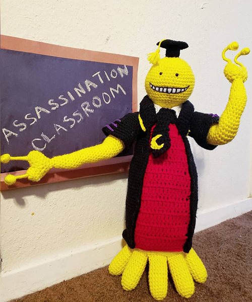

Here are my notes for the projects. I have also linked the pattern to each project, minus one project.
| Project Name | Level | Time It Took | Helpful Hint |
|---|---|---|---|
| Koro Sensei | Intermediate | 2 months | If you're barely beginning, don't make this your first project. |
| Baby Yoda | Easy | 1 week | Great for beginners! Make sure you you have safety eyes for a better look. |
| Calcifer | Hard | 3 months | Get comfortable with color changes. This caused me so many issues and restarts. |
| Grookey | Intermediate | 2 weeks | Make sure to have strong wire for the tail and cover it so it doesn't poke out. |
The pattern is unavailable so I linked Koro Senseri's information.
